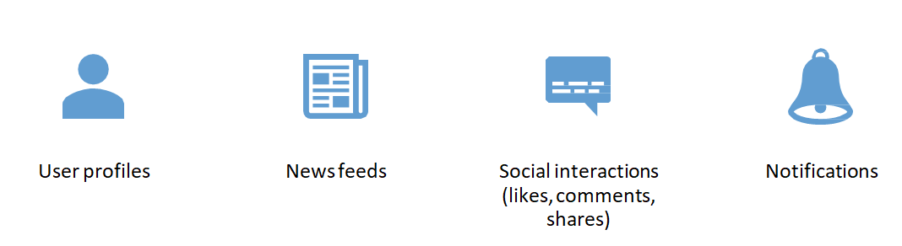
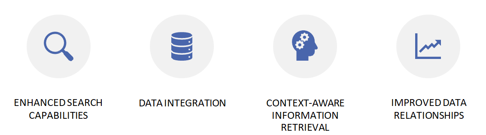
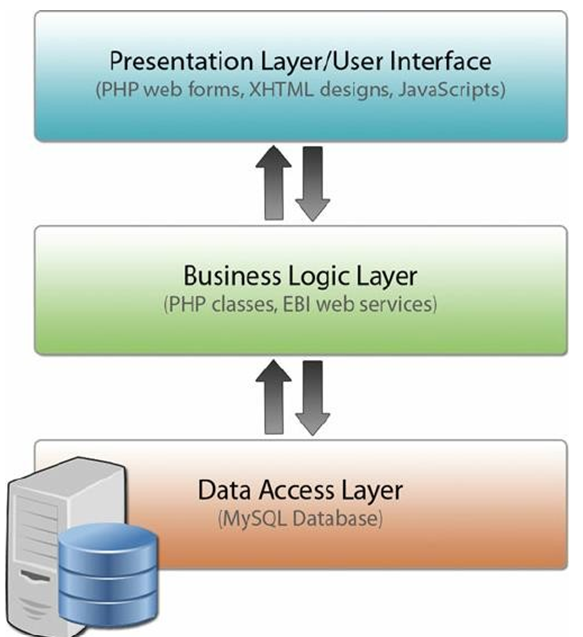
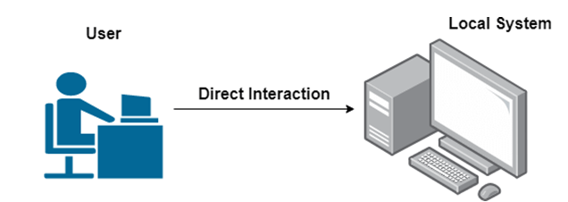
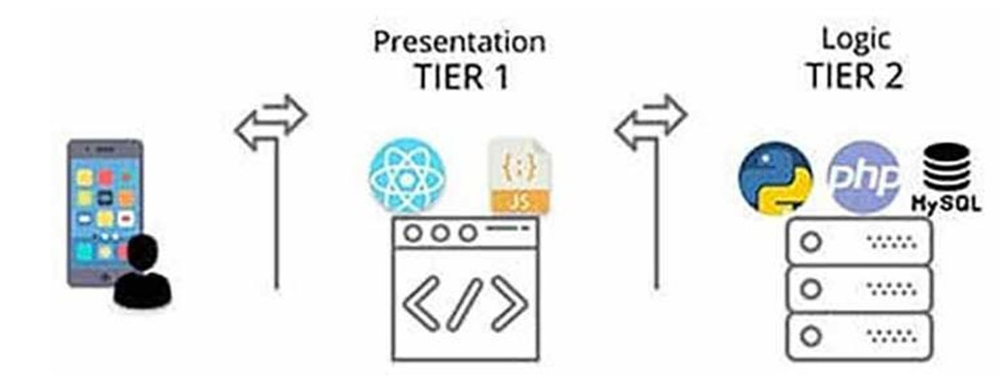
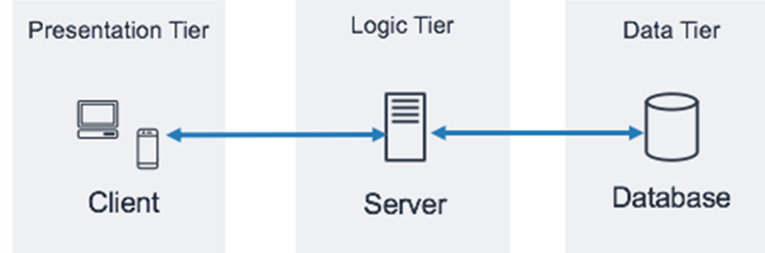
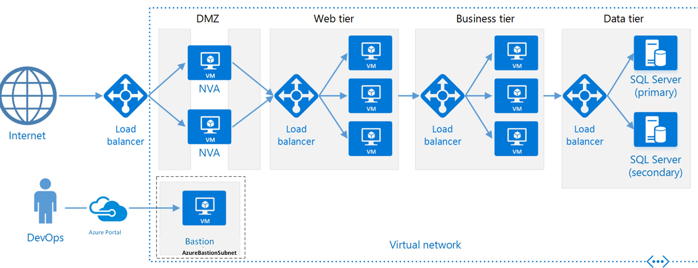

Introduction
Web applications use different structures, called architectures, to operate efficiently and meet various needs. These architectures define how an application is built, how it performs, and how well it scales with complexity.
Scalability means a web app can handle more users, requests, or data without breaking or slowing down — by adding resources or optimizing systems.
Importance
Understanding categories and architecture patterns helps developers design scalable, user-friendly, and effective web applications.
Categories of Web Applications
- Document-Centric Web Applications
- Social Web Applications
- Semantic Web Applications
Document-Centric Web Applications
These applications focus on creating, managing, and sharing documents.
Examples
- Google Docs
- Microsoft Office Online
- Dropbox Paper
Features
- Real-time collaboration
- Version control (auto-save, history, restore options)
- Document sharing
- Rich editing tools
Social Web Applications
Social Web Apps allow users to interact, share content, and communicate globally.
Examples
- Facebook
- Twitter
- Instagram
- LinkedIn
Features
- User Profiles
- News Feeds
- Likes, Comments, Shares
- Notifications

Semantic Web Applications
These apps use data with semantic meaning to improve user experience and information retrieval.
Examples
- Wolfram Alpha
- Google Knowledge Graph
- Schema.org
Features
- Enhanced Search Capabilities
- Data Integration
- Context-Aware Information Retrieval
- Improved Data Relationships

Web Architectures Overview
Architectural patterns define how web applications are structured and interact between layers.
- Layered Architecture
- One-Tier
- Two-Tier
- Three-Tier
- N-Layered Architecture
Layered Architecture
Consists of:
- Presentation Layer – User interface and interaction
- Business Logic Layer – Core functionality
- Data Layer – Storage and retrieval
Benefits: Separation of concerns, modularity, scalability

One-Tier Architecture
All components integrated in a single system.
Examples: Desktop or simple standalone applications.

Two-Tier (Client-Server) Architecture
Structure: Client handles presentation, server manages data.
Examples: Basic online forms or database applications.

Three-Tier Architecture
- Presentation Tier: Frontend (website or app)
- Application Tier: Business logic and processing
- Data Tier: Database or storage
Benefits: Scalability, separation, easier maintenance

N-Layered Architecture
An extended layered architecture with multiple layers:
- Presentation
- Application
- Domain
- Data Access
Benefits: Flexibility, modularity, scalability, maintainability
